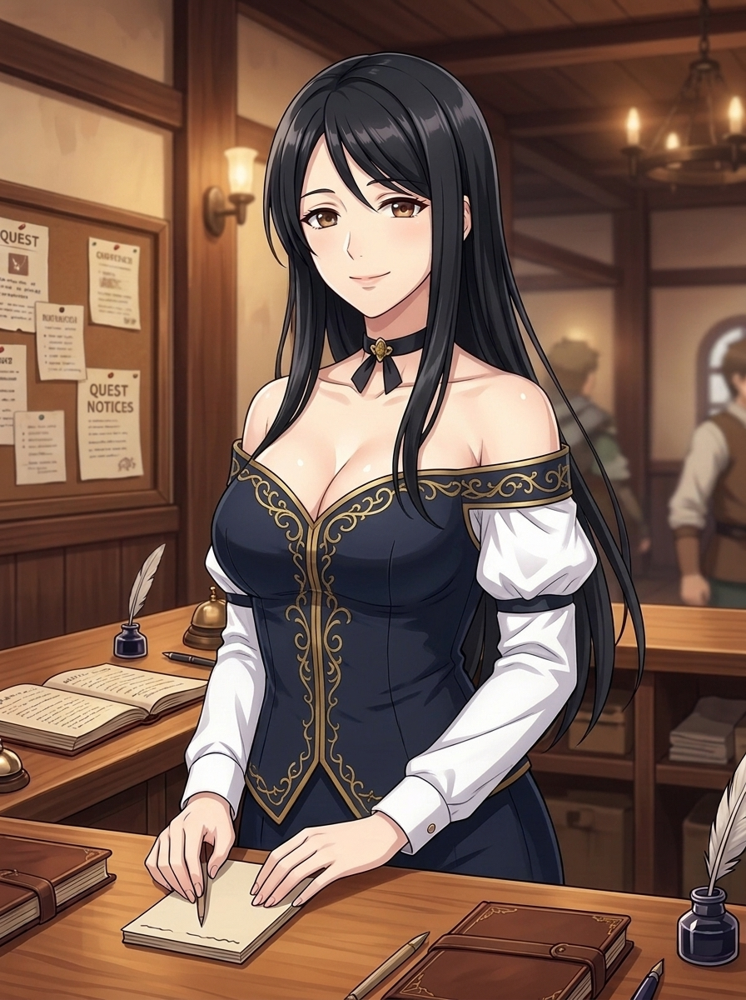
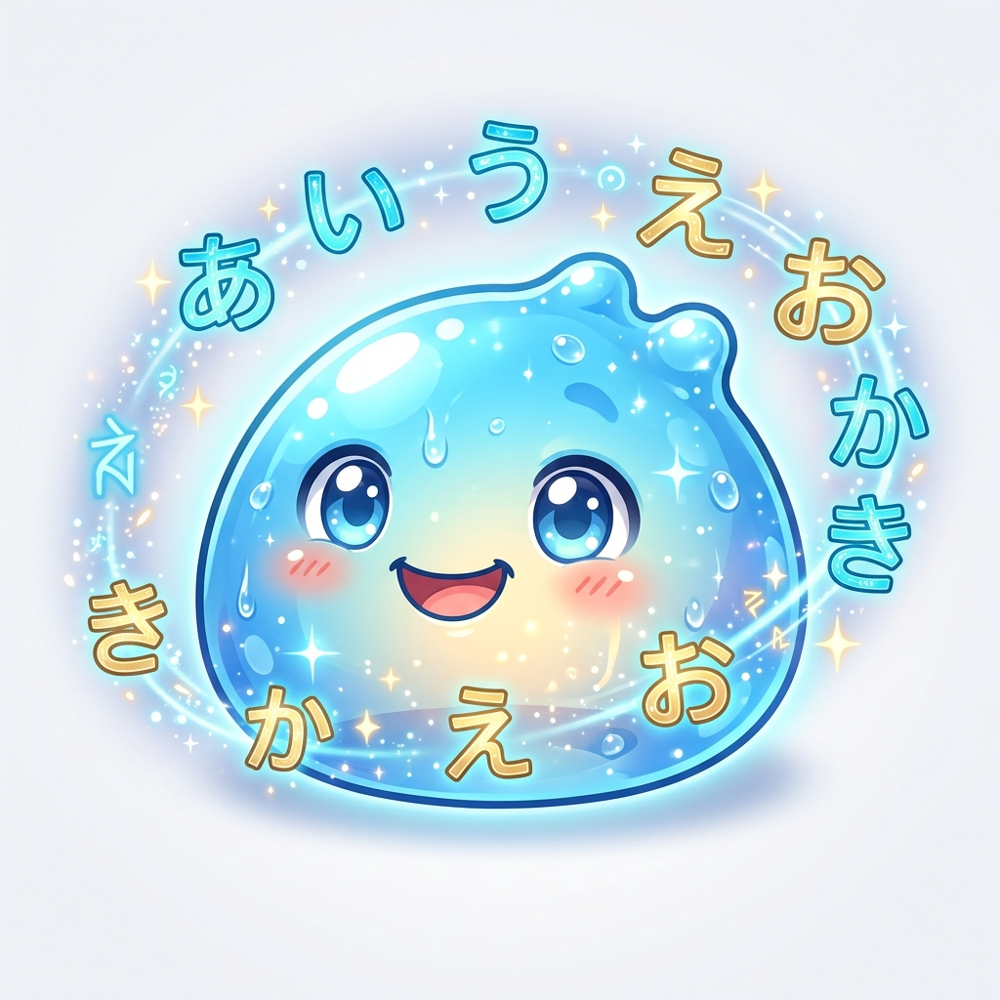

詩織（Shiori）
公會接待看板娘・專屬日語導師
🌸 公會接待日常
冒険者[ぼうけんしゃ]さん、今日[きょう]も公会[こうかい]へようこそ！
冒險者，今天也歡迎來到公會！今天的委託清單已經準備好了喔，一步一步踏實前進吧！
旅人アルス
更衣室 ➔
歧路旅人・冒險者公會成員
Day 1 / 399
序章・五十音平假名
2026-11-02 (週一)
載入今日委託中...
✨ 本日收錄單字與漢字（點擊可查看詳情與發音）

🐺 普通魔物草史萊姆 (Slime Lv.1)
HP: 120 / 120
旅人アルス
HP: 100 / 100
🛡️ 我方回合
題目載入中...
0 張
載入中...
日本語
[名詞]
（點擊卡片翻面）
日本語
【にほんご】
日語、日本語
日本語[にほんご]を勉強[べんきょう]します。
詩織（Shiori）
公會專屬日語導師
「冒險者，無論是文法疑難雜症、發音訣竅，或是想聊聊天放鬆一下，我都隨時在這裡等你喔！」
⚙️ 系統設定與存檔雲端同步
🛡️ 冒險者更衣室（角色外觀與紙娃娃自訂）
隨時調整姓名、性別、4種髮型、髮色、眼睛、膚色與《歧路旅人》四大職系裝備！
* 留空則自動使用內建的 50+ 組詩織離線對話劇本庫，不影響日常學習與造句練習。
* 系統內建故障轉移：若當前模型繁忙或達限，將自動無感切換至候補模型，絕不卡死中斷。
* 預設採用已針對動漫聲線重度調頻之 1.38 Pitch 高甜少女音，點擊即發音、零延遲、穩定不跑掉！